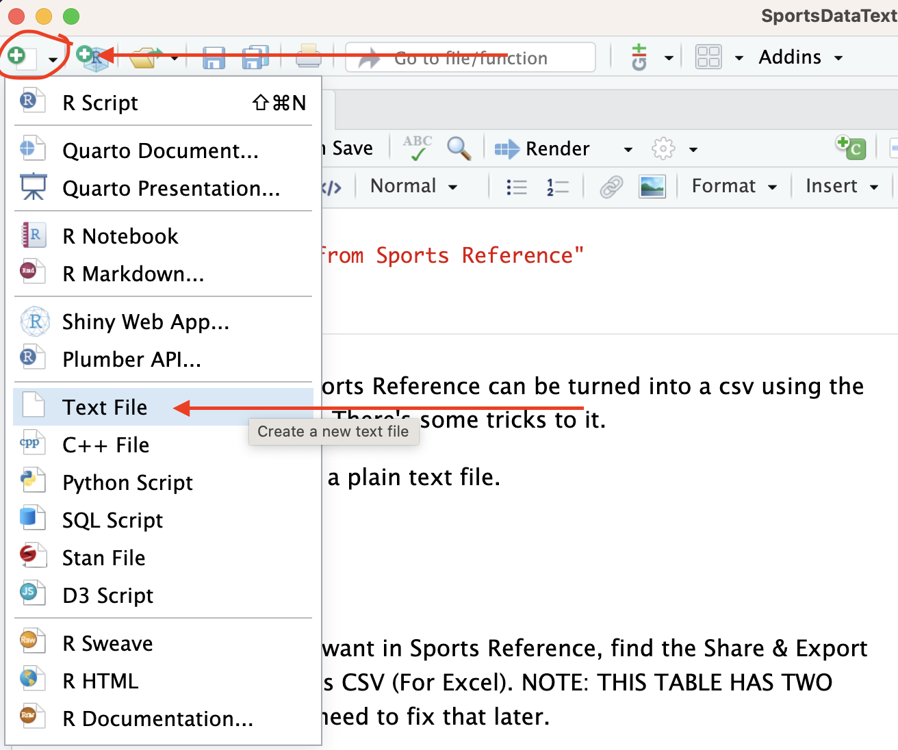
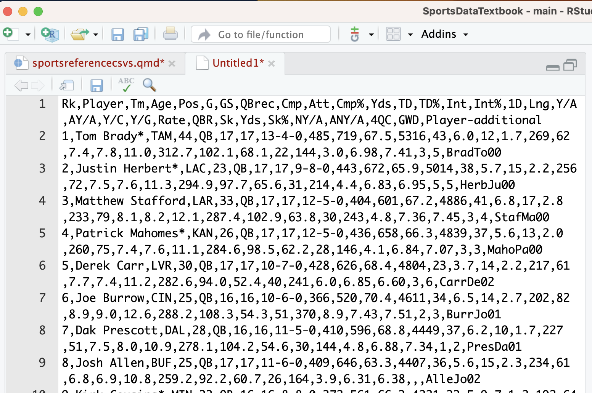
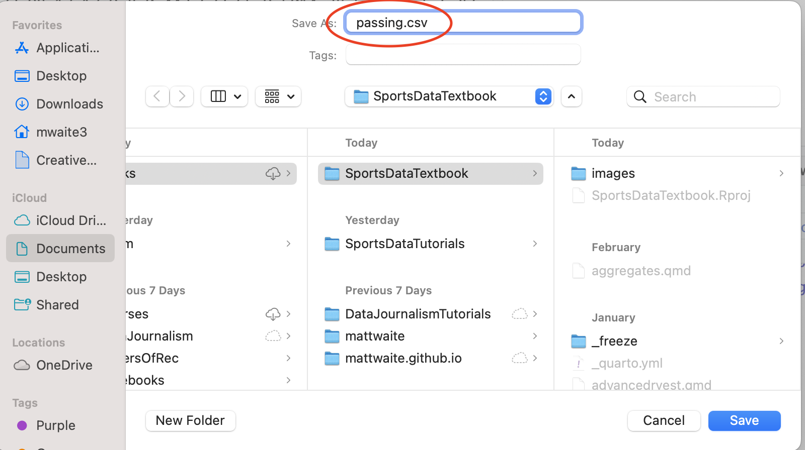

40 Getting CSVs from Sports Reference
Every table of data on Sports Reference can be turned into a csv using the magic of copy and paste. There’s some tricks to it.
Step 1: Download Atom, a free programmers text editor, and install it.

Step 2: In Atom, open a new blank file by going to File > New File.

Step 3: On the table you want in Sports Reference, find the Share & Export tab and go to Get table as CSV (For Excel). NOTE: THIS TABLE HAS TWO HEADER ROWS. You will need to fix that later.
Step 4: Highlight and copy the data from Sports Reference.
Step 5: Paste it into Atom and fix your headers. Remember that R – and pretty much every other data analysis platform – must have one row for headers. The data I copied has two. What you need to do now, in Atom, is check and see if you have any headers in that second row that repeat. If you have multiple G for goals – one is total goals, one is goals per something – you need to fix that manually. In my example, there are no repeating headers in the second row, so the first row can just be deleted.

Step 6: Save your Atom file as whatever you want to name it DOT csv and put it where you’ve got your project data.

Step 7: Import your data like you would in any other assignment. You created a CSV file.